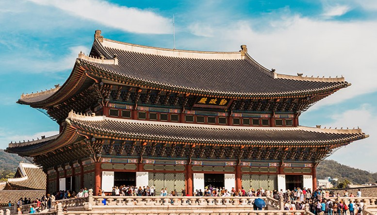
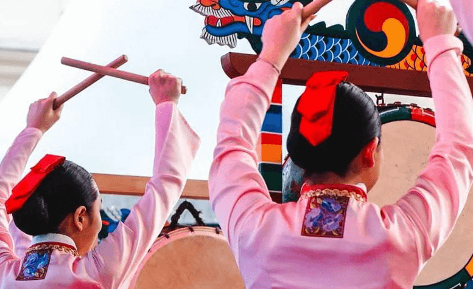
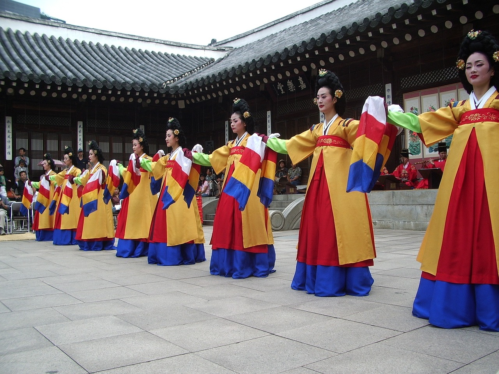
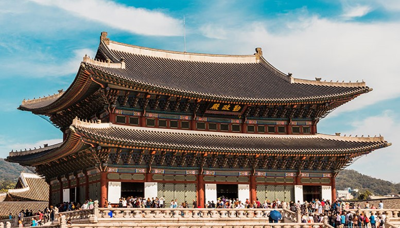
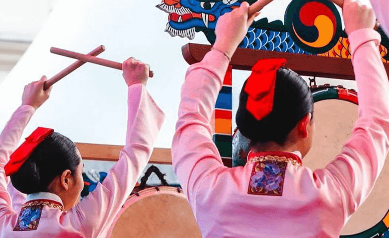
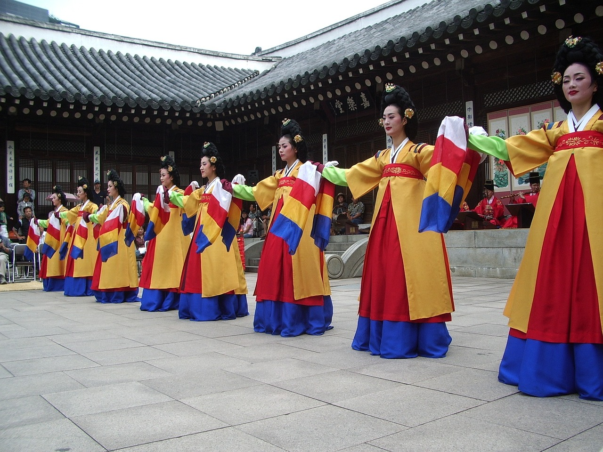

Características da Cultura
A cultura sul-coreana é uma rica mistura de tradições antigas e inovações modernas.
Os principais aspectos incluem:
- Música: O K-pop tem ganhado fama mundial.
- Cinema: Recentemente, filmes sul-coreanos ganharam reconhecimento internacional.
- Moda: As tendências de moda de Seul são seguidas em todo o mundo.
Artes e Festivais
Os festivais tradicionais incluem:
| Nome do Festival | Data | Localização |
|---|---|---|
| Festival de Cherry Blossom | Abril | Seul |
| Festival de Busan | Outubro | Busan |
 




